Bean Builder
Click Here For PDF
The Bean Builder is a tool which allows the visual assembly of an application by instantiating and setting the properties of components based on the JavaBeans component architecture (beans). The dynamic behavior of the application is specified by "wiring" relationships that represent events handlers and method calls between the objects in an application. The state of this application is saved to and restored from an XML format. An application is constructed using the Java API without having to write a line of source code.
Let Us Understand more about Bean Builder by creating a simple application
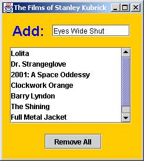
Let’s create an application that builds a simple entry list. While trivial in functionality, this application touches upon most of the features in the Bean Builder. Entering text and pressing return field appends the text to the list. The Remove All button removes all the items from the list.
Creating User Interface
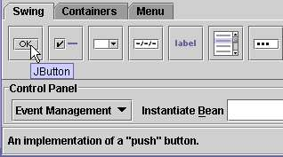
Objects are retrieved from the Palette below the toolbar. The default palette is loaded with Swing components and containers arranged alphabetically from left to right. The Palette is specified as an external XML document and can be edited. The default palette is named palette.xml.
Instantiating the First Component: The JScrollPane
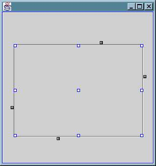
1. Select the JScrollPane on the Containers tab.
Notice that the cursor changes to a crosshair
2. Click and drag a rectangle onto the design panel.
An empty JScrollPane should appear and the cursor returns to a pointer.
Instantiating the Rest of the Components
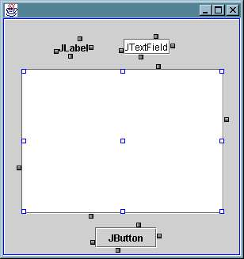
1. Instantiate the JLabel, JTextField and JButton components by selecting them from the Palette and then clicking in the Designer.
Make sure that the components are sized according to their default preferred size.
If the component appears to be very small then that indicates that you set the preferred size by clicking and dragging an instantiation rectangle. Delete the component by selecting it and pressing the Delete key and then try to instantiate the component again.
2. Instantiate the JList inside the JScrollPane by clicking inside the JScrollPane in the Designer.
It's very important for scrollable components like JList to adhere to its preferred size while in the JScrollPane.
Setting Object Properties
The instantiated objects have the default properties when the default constructor on the Class is invoked. Properties that conform to the JavaBeans specification method signatures for getters and setters are exposed and may be set to give the object a distinct identity.
For example, some visual properties on Components that can be set include the font, colors, sizing and alignment characteristics.
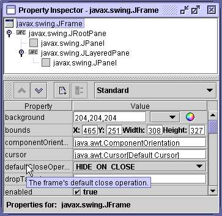
Now set the properties to all based on requirement
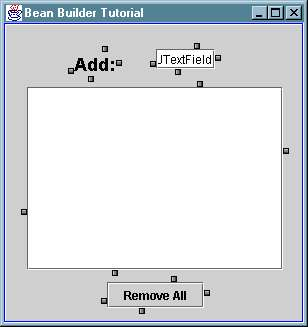
1. Select the JButton object as the current object and change the label property to "Remove All".
2. Change the name of the JLabel object to "Add: " by changing its text property
3. Increase the value of the JLabel object's font property to 18 point using the font PropertyEditor.
4. Set the horizontalAlignment of the label to be right justified by selecting "RIGHT" using the alignment combo box.
Creating a Non-visual Bean
The model view controller (MVC) architecture of the JFC components requires a model that acts as an intermediary between the user interaction and the data. For this example we set the model of the JList object to use a DefaultListModel.
The DefaultListModel is a non-visual bean - a bean that doesn't inherit from java.awt.Component
The Control Panel
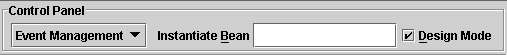
The modes of the builder and designer are controlled with this interface. The combo box on the left toggles the designer between two modes:
• Event Management allows editing of dynamic interactions between objects.
• Layout Editing allows the editing of the resizing behavior between objects.
The check box on the right toggles the designer on or off. If the designer is off then the designed application is "live".
First we have to create a new instance of the DefaultListModel and place it on the design panel for manipulation.
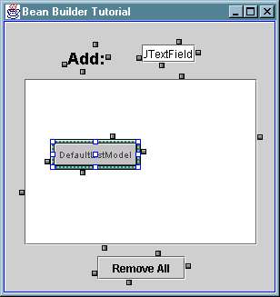
1. Put the cursor focus in the Instantiate Bean text field (try alt-b)
2. Enter the following string: javax.swing.DefaultListModel.
3. Press the Enter key to create a new instance
A visual proxy object that represents the non-visual bean appears in the upper left of the Designer and is the selected object. Notice that the containment hierarchy doesn't show the same selection. The hierarchy only displays containment relationships.
This visual proxy object is used to select and hookup the non-visual Object that it wraps. You can move the visual proxy object by dragging on the center handle but you cannot resize the visual proxy.
The Instantiate Bean field is used to instantiate any object from a class that is found in the classpath.
Setting an Object as a Property of Another Object
The newly instantiated DefaultListModel is in the design but is not associated with an object. This model should be associated with the JList object in the user interface. Use the Interaction Wizard to define the way that objects relate to each other. The interaction is going to take a source object and set it as a property value on the target object using a setter method from the target. This means that we want to call the JList.setModel(...) method with the list model as the argument.
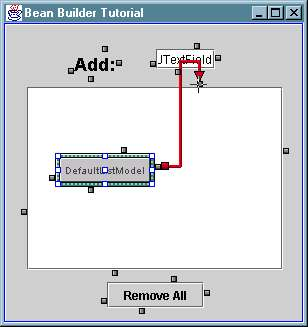
1. Click on any one of the four connection handles surrounding the DefaultListModel instance and drag the mouse over to a connection handle surrounding the JScrollPane object.
Notice that a line is drawn between the list model and the JScrollPane object. The cursor changes to a crosshair when it is over the connection handle.
2. Release the mouse over the JScrollPane connection handle.
A popup menu appears that has all the components in the inheritance hierarchy of the JScrollPane.
3. Select the JList from the popup menu and the Interaction Wizard appears
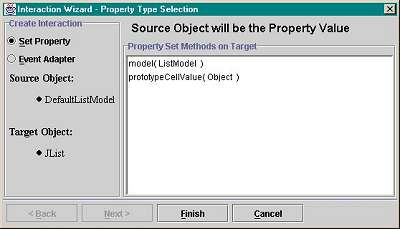
4. Select the Set Property radio button and the Wizard reconfigures itself for property association.
The items in the list are target object methods whose parameter matches the type of the source object or can be related by an isAssignableFrom inheritance relationship.
Select the "model( ListModel )" list item and select the Finish button.
The Interaction Wizard is dismissed and the DefaultListModel instance is used as the model for the JList object. You can verify this by selecting the JList object in the containment hierarchy and looking at the model property in the property sheet.
Creating Event Adapters
The traditional way of creating an event interaction between two objects was to create a small inner class and recompile it.
This builder uses the Dynamic Proxy API to create EventHandler objects that are event listeners. This API was added to release 1.3 and are used to synthesize listeners of arbitrary types at runtime. The advantage of using the Dynamic Proxy API is that it avoids costly inner classes and you can dynamically create these listener classes without having to recompile code.
We are now going to add two EventHandlers that implement the following behavior:
• Pressing Enter in the text field adds the contents of the text field to the list model (and therefore, adds the item to the list)
• Pressing the "Remove All" button removes all the items in the list model (and therefore, it removes them all from the list)
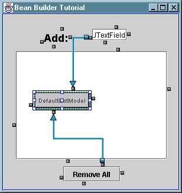
1. Click on a JTextField connection handle and drag the cursor to a DefaultListModel connection handle. The Interaction Wizard appears.
2. Select the Event Adapter radio button in the Interaction Wizard
The Wizard reconfigures itself for generating an event adapter. Notice that the Finish button is disabled and the Next button is enabled. This indicates that there are more steps to create the adapter.
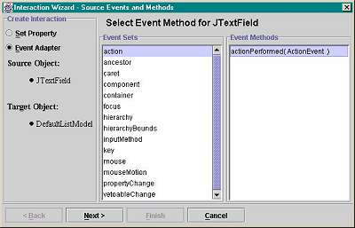
3. Select the "action" item in the "Event Sets" list and select the Next button
The page of the Wizard apears that allow the selection of a target method on the DefaultListModel instance. As a simplification, only target methods that require one or zero arguments are listed.
4. Select the "addElement( Object )" item in the "Target Methods" list and select the Next button
The third panel is a list of no argument methods retrieved from the source object that return the same type that the target method requires as an argument. This allows adapters that get generated that use target.setFoo(source.getBar);
Select the "getText( )" item in the "Source Methods" list and select the Finish button.
A new EventHandler is created that adds the string in the JTextField to the list as a result of the actionPerformed method when the Enter key is pressed. The EventHandler is created with the Dynamic Proxy APIs that were introduced in release 1.3. 5.
Creating Another Event Adapter
Create a new event adapter for the JButton using the Interaction Wizard.
This interaction deletes all the items in the list when the "Remove All" button is pressed. Repeat the same steps using the wizard with the following values:
• Source Object: JButton
• Target Object: DefaultListModel
• Source Method: actionPerformed( ActionEvent )
• Target Method: removeAllElements( )
Testing the Runtime Application
The event adapters and property associations are created and linked for "live" objects. You may test the live object graph by taking the Bean Builder out of Design Mode and putting it into Runtime Mode. You can switch between these two states by selecting or de-selecting the Design Mode checkbox (alt-d). This Action is mirrored on the View menu.
In Runtime Mode, the objects on the design panel become "live". The application behaves the exactly the way that it was designed.
Type some values in the text field and press the Enter key at the end of each string. These values appear in the list. Pressing the "Remove All" button clears the list.